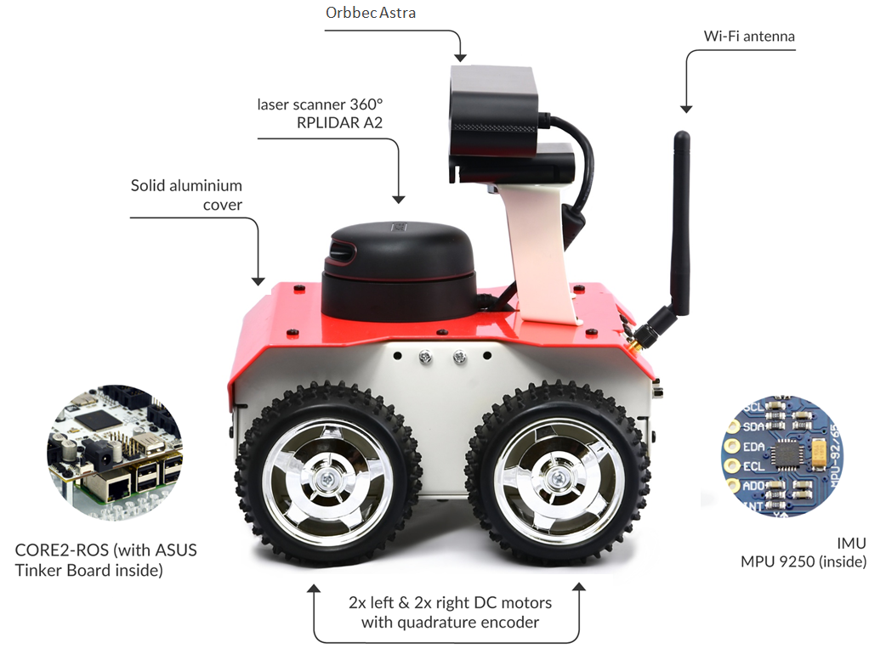
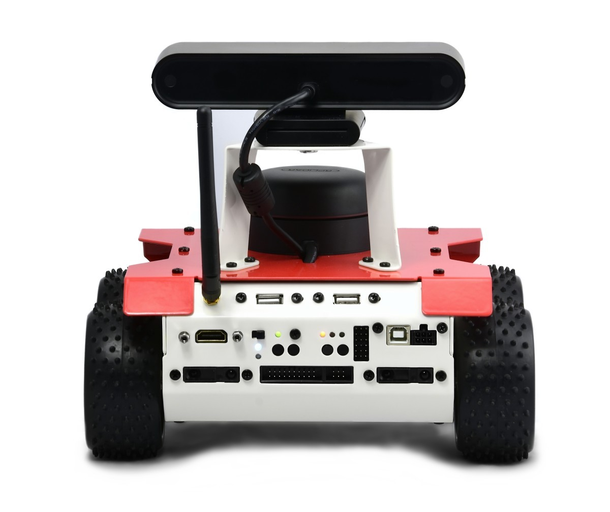
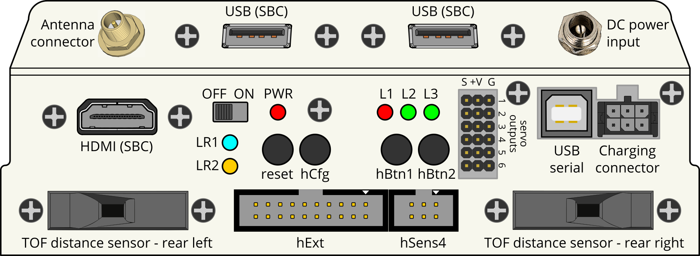
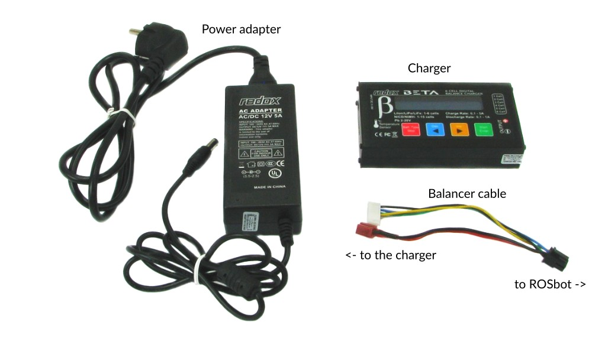
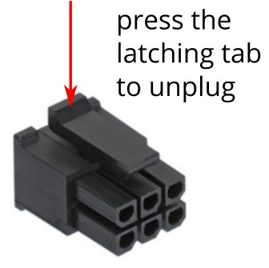

ROSbot manual
Overview
ROSbot is an autonomous robot platform based on Husarion CORE2-ROS robot controller available in two version: 2.0 and 2.0 PRO.
ROSbot is an affordable robot platform for rapid development of autonomous robots. It can be a base for custom service robots, inspection robots and robots working in swarms. Both version integrates:
- 4-wheels mobile platform containing DC motors with encoders and an aluminum frame
- Orbbec Astra RGBD camera
- MPU 9250 inertial sensor (accelerometer + gyro)
- rear panel providing interfaces for additional modules
In ROSbot 2.0:
- CORE2-ROS controller with Asus Tinker Board
- RPLIDAR A2 laser scanner
{kind=link}
{kind=link}
{kind=link}
In ROSbot 2.0 PRO:
- CORE2-ROS controller with UpBoard UP
- RPLIDAR A3 laser scanner
{kind=link}
{kind=link}
{kind=link}
You can use your ROSbot offline however we recommend connecting to Husarion Cloud as it gives you access to a lot of additional functionalities like remote management and firmware updates.
If you do not own ROSbot yet, you can purchase it here.
You can also test the performance of ROSbot using our simulation model in Gazebo environment. It is available here, at our GitHub page.

You can find free ROS tutorials dedicated for ROSbot under this link. They will guide you through different aspects of programming autonomous vehicles in ROS
Hardware guide
Specification
| Attribute | Description |
|---|---|
| Dimensions with camera and LiDAR | 200 x 235 x 220mm / 7.87 x 9.25 x 8.66in [L x W x H] |
| Dimensions without LiDAR | 200 x 235 x 146mm / 7.87 x 9.25 x 5.74in [L x W x H] |
| Dimensions without camera and LiDAR | 200 x 235 x 106mm / 7.87 x 9.25 x 4.17in [L x W x H] |
| Weight | 2,84kg / 100oz (with camera and LiDAR), 2,45kg / 86oz (without camera and LiDAR) |
| Wheel diameter / Clearance / Wheelbase | 85mm / 22mm / 105mm |
| Chassis material | Powder-coated aluminum plate, 1.5mm thick |
| Maximum translational velocity | 1.25 m/s |
| Maximum rotational velocity | 420 deg/s (7.33 rad/s) |
| Maximum load capacity | 10kg / 352oz |
| Battery life | 1.5h - 5h |
Components


Components description
| Component | Quantity | Description |
|---|---|---|
| Infrared distance sensor | 4 | VL53L0X Time-of-Flight distance sensor with up to 200 cm range, more details. |
| DC motor | 4 | Xinhe Motor XH-25D Motor used: RF-370, 6VDC nominal, 5000rpm No load speed at the output shaft: 165 rpm Stall torque: 2.9 kg*cm Stall current: 2.2A Gear ratio: ~34 (exact ratio is 30613/900) Encoder: magnetic, 48ppr, 12 poles |
| IMU sensor | 1 | Powerful 9-Axis Accel/Gyro/Magnetometer sensor with MPU-9250, more details. |
| RGBD camera | 1 | Orbbec Astra with RGB image size 1280x960 and depth image size 640x480. |
| Batteries | 3 | Li-Ion 18650 protected, rechargeable batteries, 3500mAh capacity, 3.7V nominal voltage Note: Device may be shipped interchangeably with similar batteries. |
| Antenna | 1 | Connected directly to the ASUS Tinker Board Wi-Fi module. Uses an RP-SMA(m) <-> I-PEX MHF4 cable to connect the antenna with SBC. |
In ROSbot 2.0:
| Component | Quantity | Description |
|---|---|---|
| CORE2-ROS | 1 | Advanced version of CORE2 with an ASUS Tinker board computer. CORE2 real-time controller is based on STM32F407 microcontroller. The SBC runs on Ubuntu-based OS, customized to use ROS. |
| LIDAR | 1 | RpLidar A2, 360 degree and up to 8m range, more details. |
In ROSbot 2.0 PRO:
| Component | Quantity | Description |
|---|---|---|
| CORE2-ROS | 1 | Advanced version of CORE2 with an Up Board computer. CORE2 real-time controller is based on STM32F407 microcontroller. The SBC runs on Ubuntu-based OS, customized to use ROS. |
| LIDAR | 1 | RpLidar A3, 360 degree and up to 25m range, more details. |
Rear panel description

| Component | Quantity | Description |
|---|---|---|
| Antenna connector | 1 | Wi-Fi antenna RP-SMA socket. Required for Wi-Fi connectivity. |
| USB | 2 | USB 2.0 host ports from SBC. |
| HDMI | 1 | HDMI output from SBC. |
| Power switch | 1 | Turns ROSbot completely ON or OFF. |
| LEDs | 6 | LR1(yellow), LR2(blue), L1(red), L2(green), L3(green), PWR(red), more details here. |
| reset button | 1 | Button used for reset CORE2. |
| hCfg button | 1 | Button used for connecting ROSbot to [Husarion Cloud](https://cloud.husarion.com/). |
| hBtn | 2 | hBtn1, hBtn2 - programmable buttons. |
| Outputs for servo | 6 | Servo output with PWM, more details here. |
| USB serial | 1 | USB serial port used for debugging the firmware on CORE2-ROS controller. |
| Charging connector | 1 | 6-pin connector for charging internal Li-Ion batteries. |
| DC power input | 1 | DC for working with external 12V power supply. Use the power supply included with charger or any 12V, min. 5A power supply with 5.5/2.5mm plug (center-positive). |
| Time-of-Flight distance sensor | 2 | VL53L0X Time-of-Flight distance sensor with up to 200 cm range, more details here. | .
| hExt | 1 | 12xGPIO, 7x ADC, SPI, I2C, UART, more details here. |
| hSens | 1 | 4 xGPIO, ADC, UART, more details here. |
Power supply
ROSbot is powered from an internal, rechargeable Li-Ion battery pack that contains 3 Li-Ion cells, connected in series. This type of connection is called “3S”. The schematic below explains how the cells are wired together and with the charging connector (on ROSbot side).
The BAT+ and BAT- are the power connections and the “bal Bxx” wires are used to monitor the voltage on each cell. It is strongly recommended to keep equal voltages on each cell during the charging process. The charger included with ROSbot can charge batteries in the described way and, thanks to that, the long life of the battery set is possible.
The nominal voltage of each cell is 3.7V but the useful range is 3.2V to 4.2V.
Important - discharge indicator If only the right firmware is preloaded to the internal controller (CORE2), the LED1 is programmed to indicate the power status:
- the LED1 is on when the robot is turned on
- the LED1 is blinking when battery is low – please charge immediately!
Please make sure that the user firmware always contains the function that monitors the supply voltage level. Deep discharging of batteries may decrease their lifecycle. Discharging to the voltage lower than 3.0V/cell can also trigger the over discharge protection. If the voltage is too low, turn ROSbot off and charge batteries as soon as possible.
Charging ROSbot
 The ROSbot kit contains the Redox Beta charger. It is an universal charger, suitable for charging NiCd, NiMH, Li-Po, Li-Fe, Li-Ion and Pb (AGM, VRLA) batteries. ROSbot shall be charged using an included charger and cable.
{kind=link}
Charger kit includes:
- Redox Beta charger
- AC/DC power adapter 100...240V to 12V 5A with 5.5/2.5mm plug on the 12V side
- a cable to connect charger with ROSbot charging port
Quick charging guide:
- Connect the power adapter to the charger and the output cable between charger and ROSbot (2 connectors on charger side, 1 black connector to ROSbot charging port).
- Use red and blue buttons to select “LiPo BATT” mode and press [Start].
- Use arrows to select “LiPo CHARGE” mode.
- Press [Start] - the current value should start blinking. Use arrows to set the current to 1.5A.
- Press [Start] again - the voltage value should start blinking. Select “11.1V(3S)” using arrows. The picture below shows the desired result.
- Press and hold [Start] for 2 seconds. The charger should now ask for confirmation. Press [Start] again. The charging process should begin now.
- When the charging will be finished (after about 3 hours), the charger will generate a loud “beep” sound and will finish charging at the same time.
If you need more information about charging, please read the Charging manual for ROSbot in PDF format.
Notes
- You can change charging current to maximum 3A. Please note that a regular charging with the maximum current can shorten the battery life.
- If you are going to use ROSbot stationary for a long time, you can use ROSbot with charger connected (and charging) all the time. It will increase the batteries lifetime. Align the charging current to keep the voltage at about 11.1V-12V.
- In case you need to replace batteries, use only 18650 Li-Ion batteries, with the capacity in a range of 1800...3500mAh and with a protection circuit! Using unprotected batteries may result in serious injuries or fire.
- Unplug charging connectors carefully. You shall not unplug the charger connectors holding the wires. The balancer connection on ROSbot side has a latching tab (see photo below) that must be pressed before unplugging. On the charger side there is no latching tab but you should also unplug this connector holding the white plug.

Software
Software for ROSbot can be divided into 2 parts:
- A firmware that works on the real-time controller (CORE2) and can be developed and uploaded from Husarion Cloud with WebIDE. It can also be developed offline using Visual Studio Code IDE.
- OS based on Ubuntu 16.04, which runs on the SBC (ASUS Tinker Board) and contains all components needed to start working with ROS immediately. The microSD card with OS is included with each ROSbot. The OS has been modified to make the file system insensitive to sudden power cuts.
In some cases you will need to flash the OS image to the microSD card once again:
- in case of accidential damage of the system,
- to update the OS (it can be udpated remotely, but flashing the microSD card can be easier sometimes),
- to clear all user changes and restore factory settings. To do that, you have to disassembly the top cover, unscrew the 4 screws on the CORE2 corners and carefully carry up CORE2 with SBC. Then you can change the microSD card and flash the OS. You can find the image and flash manual here. If you want to replace the included card, remember that you need to use at least 16 GB capacity and 10 speed class micro SD card.
First steps
Connection to Husarion Cloud
- Things you need: the ROSbot, any Android device with Wi-Fi connectivity and with hConfig app installed (available on Google Play and App Store), any PC computer to work with ROSbot, the Wi-Fi network.
- Login or register on cloud.husarion.com.
- Register your ROSbot on your cloud account by clicking “Add new device”.
- Launch the hConfig application and follow the instructions. Note: The app will ask you to hold hCfg button on CORE2 and to watch LR1, LR2 LEDs – they are all available on the rear panel.
- Now you should see your ROSbot online and you can start with ROSbot tutorial.
ROS tutorials
ROS (Robot Operating System) provides libraries and tools to help software developers create robot applications. It provides hardware abstraction, device drivers, libraries, visualizers, message-passing, package management, and more. It's very powerful and functional tool dedicated to design robots. We created the set of ROS tutorials dedicated for this platform to make it easier to familiarize yourself with these frameworks.
Configuring ROSbot to work with 5GHz WiFi.
By default ROSbot supports WiFi in 2.4GHz band, this is sufficent for most cases. If you encounter problems with data transfers e.g. due to processing large amounts of data or noise from other networks you can try to use connection in 5GHz band.
To do this, you will need a USB 5GHz WiFi card (any device based on rtl8812au should be fine, tested models are TP-Link Archer T4U and D-Link DWA-172)
If you have recent image version you can skip update and kernel instal, otherwise do:
sudo apt-get update
This will update packages list.
Then do:
sudo apt-get install tinkerboard-kernel
This will install the newest available kernel version, that supports 5GHz WiFi.
Load kernel module:
modprobe rtl8812au
Type ifconfig to list network interfaces.
You should see now new interface named wlan1
Now, You can list all available newtworks:
sudo iwlist wlan1 scanning | grep ESSID
You can connect to your WiFi with:
nmcli d wifi connect <ESSID> password <pass> iface wlan1
Remember to replace ESSID and pass with name and passowrd of chosen network.
ROSbot will try to connect to this network each time it boots.
Docs and links
All helpful documents and links in one place: